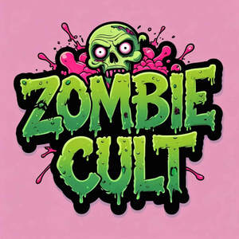

Trade Mark Journal No.2025/026 27 June 2025
UK00004219861 16 June 2025 (14,21,25,32)

- Class 14
- Keyrings; Keyrings of common metal; Lanyards for keys; Wristlets [jewellery]; Key chains as jewellery [trinkets or fobs]; Retractable key rings [trinkets or fobs]; Key rings [trinkets or fobs]; Fancy keyrings of precious metals; Key charms [trinkets or fobs]; Brooches [jewellery]; Jewellery brooches; Key holders [trinkets or fobs]; Bracelets [jewellery]; Key tags [trinkets or fobs]; Key chains [trinkets or fobs]; Key rings [trinkets or fobs] of precious metal; Pendants [jewellery]; Fobs for keys; Lockets [jewellery]; Decorative brooches [jewellery]; Necklaces [jewellery]; Bracelets; Pins [jewellery]; Pins being jewellery; Necklaces; Silver-plated bracelets; Jewellery rope chain for bracelets; Brooches [jewelry]; Jewelry brooches; Brooches being jewelry; Charms [jewellery]; Charms for jewellery; Jewellery charms; Amulets being jewellery; Amulets [jewellery]; Pendants; Jewellery hat pins; Silver-plated necklaces; Trinkets [jewellery]; Jewellery rope chain for necklaces; Decorative pins [jewellery]; Boxes for cufflinks; Bangle bracelets; Cufflinks; Key chains [split rings with trinket or decorative fob]; Clasps for jewellery; Rings being jewellery; Rings [jewellery]; Jewellery chain of precious metal for bracelets; Cuff-links; Gold-plated necklaces; Identification bracelets [jewelry]; Leather key fobs; Key rings [split rings with trinket or decorative fob]; Jewelry pins for use on hats; Amber pendants being jewellery; Lapel pins [jewellery]; Jewellery chain of precious metal for necklaces; Gold plated brooches [jewellery]; Charms for key rings; Ornaments [jewellery]; Jewellery, including imitation jewellery and plastic jewellery; Jewellery chains; Chains [jewellery]; Bracelets made of embroidered textile [jewellery]; Key chains for use as jewellery; Bracelets [jewelry]; Key fobs [rings] coated with precious metal; Items of jewellery; Jewellery boxes; Jewellery items; Pendants [jewelry]; Clips of silver [jewellery]; Bracelets for watches; Key rings and key chains, and charms therefor; Lockets [jewelry]; Amberoid pendants being jewellery; Bracelet charms; Charity bracelets; Bracelets [charity]; Jewelry clips for adapting pierced earrings to clip-on earrings; Brooches [jewellery, jewelry (Am.)]; Pewter jewellery; Identification bracelets of precious metal [jewelry]; Plastic bracelets in the nature of jewelry; Metal key fobs; Key fobs of imitation leather; Wooden jewellery boxes; Closures for necklaces; Jewellery rope chain for anklets; Scarf clips being jewelry; Enamelled jewellery; Necklace charms; Necklaces [jewelry].
- Class 21
- Cups; Cups and mugs; Coffee cups; Tea cups; Sippy cups; Plastic cups; Compostable cups; Glass cups; Drinking cups; Cardboard cups; Liqueur cups; Egg cups; Cups (Egg -); Biodegradable cups; Paper cups; Fruit cups; Cups (Fruit -); Cup lids; Mixing cups; Sake cups; Feeding cups; Demitasse sets comprised of cups and saucers; Silicone baking cups; Cups of paper or plastic; Paper baking cups; Baking cups of paper; Cupcake baking cups; Cups made of earthenware; Cups made of china; Training cups for babies; Cup holders; Cups made of pottery; Training cups for infants; Cups made of plastics; Feeding cups for children; Cups of precious metal; Egg cups of precious metal; Biodegradable paper pulp-based cups; Double wall cups; Coffee mugs; Insulating sleeve holder for beverage cups; Drinking cups [not of precious metal]; Egg cups, not of precious metal; Training cups for babies and children; Mugs; Cups, not of precious metal; Suction bowls; Prize cups of porcelain, ceramic, earthenware, terra-cotta or glass; Coffee pots; Coffee scoops; Glass mugs; Sake cups [not of precious metal]; Compostable bowls; Porcelain mugs; Mugs of porcelain; Tea strainers; Drinking mugs made of porcelain; Tea pots; Teacups (yunomi); Teacups [yunomi]; Commemorative statuary cups of porcelain, ceramic, earthenware, terra-cotta or glass; Earthenware mugs; Ceramic mugs; Plastic bowls [basins]; Carafes; Tumblers for use as drinking glasses; Sugar bowls; Glass bowls; Bowls (Glass -); Beer mugs; China mugs; Mugs of china; Bowls; Coffee stirrers; Pint glasses; Milk jugs; Mugs made of plastic.
- Class 25
- Clothing; Jackets [clothing]; Knitwear [clothing]; Ready-to-wear clothing; Woolen clothing; Furs [clothing]; Garments for protecting clothing; Layettes [clothing]; Clothing layettes; Linen clothing; Headbands [clothing]; Headbands for clothing; Gloves [clothing]; Gloves as clothing; Clothes; Aprons [clothing]; Denims [clothing]; Shorts [clothing]; Cashmere clothing; Leather clothing; Clothing of leather; Silk clothing; Collars [clothing]; Parts of clothing, footwear and headgear; Knitted clothing; Veils [clothing]; Hoods [clothing]; Windproof clothing; Corsets [clothing, foundation garments]; Embroidered clothing; Wristbands [clothing]; Bandeaux [clothing]; Belts [clothing]; Belts for clothing; Rainproof clothing; Waterproof clothing; Visors [clothing]; Casual clothing; Jackets being sports clothing; Jackets (Stuff -) [clothing]; Stuff jackets [clothing]; Bottoms [clothing]; Clothing for leisure wear; Playsuits [clothing]; Ready-made clothing; Latex clothing; Woven clothing; Trunks being clothing; Infant clothing; Drawers as clothing; Leisure clothing; Ties [clothing]; Clothing for sports; Sports clothing; Drawers [clothing]; Athletic clothing; Clothing for children; Muffs [clothing]; Clothing for babies; Bodies [clothing]; Tops [clothing]; Clothing for infants; Clothing for cycling; Weatherproof clothing; Pockets for clothing; Water-resistant clothing; Fabric belts [clothing]; Triathlon clothing; Clothing for skiing; Beach clothing; Thermal clothing; Handwarmers [clothing]; Cowls [clothing]; Chaps (clothing); Men's clothing; Fishing clothing; Braces for clothing; Mitts [clothing]; Dance clothing.
- Class 32
- Beer; Malt beer; Non-alcoholic beer; Bock beer; Saison beer; Beers; Low-alcohol beer; Craft beer; Barley wine [Beer]; Barley wine [beer]; Black beer [toasted-malt beer]; Beer and brewery products; Ginger beer; Flavored beer; Wheat beer; Coffee-flavored beer; Beer wort; Frozen hops for brewing beer; Non-alcoholic beers; Root beer; Root beers, non-alcoholic beverages; Dried hops for brewing beer; Non-alcoholic beer flavored beverages; Craft beers; Alcohol-free beers; Lager; Hop pellets for brewing beer; De-alcoholized beer; Imitation beer; Flavored beers; Black beer; Root beers; Flavoured beers; De-alcoholised beer; Low alcohol beer; Bitter [Beers]; Beer-based beverages; Non-alcoholic malt drinks; Ale; Non-alcoholic malt beverages; Hops (Extracts of -) for making beer; Extracts of hops for making beer; Non-alcoholic beer-based cocktails; Hop extracts for manufacturing beer; Beer-based cocktails; Coffee-flavored ale; Lagers; Sarsaparilla [non-alcoholic beverage]; Kvass [non-alcoholic beverage]; Non-alcoholic wine; Kvass [non-alcoholic beverages]; Carbonated non-alcoholic drinks; Cider, non-alcoholic; Cola drinks; Non-alcoholic beverages flavored with coffee; Ginger ale; Non-alcoholic beverages with tea flavor; Non-alcoholic beverages flavoured with coffee; Malt syrup for beverages; Non-alcoholic drinks; Non-alcoholic soda beverages flavoured with tea; Non-alcoholic malt free beverages [other than for medical use]; Non-alcoholic carbonated beverages; Ales; Non-alcoholic flavored carbonated beverages; Alcohol free wine; Non-alcoholic wines; Alcohol free cider; Non-alcoholic fruit drinks; Non-alcoholic beverages; Beverages (Non-alcoholic -); Non-alcoholic beverages flavored with tea; Non-alcoholic fruit vinegar beverages; Non-alcoholic beverages flavoured with tea.
Padge Music LTD